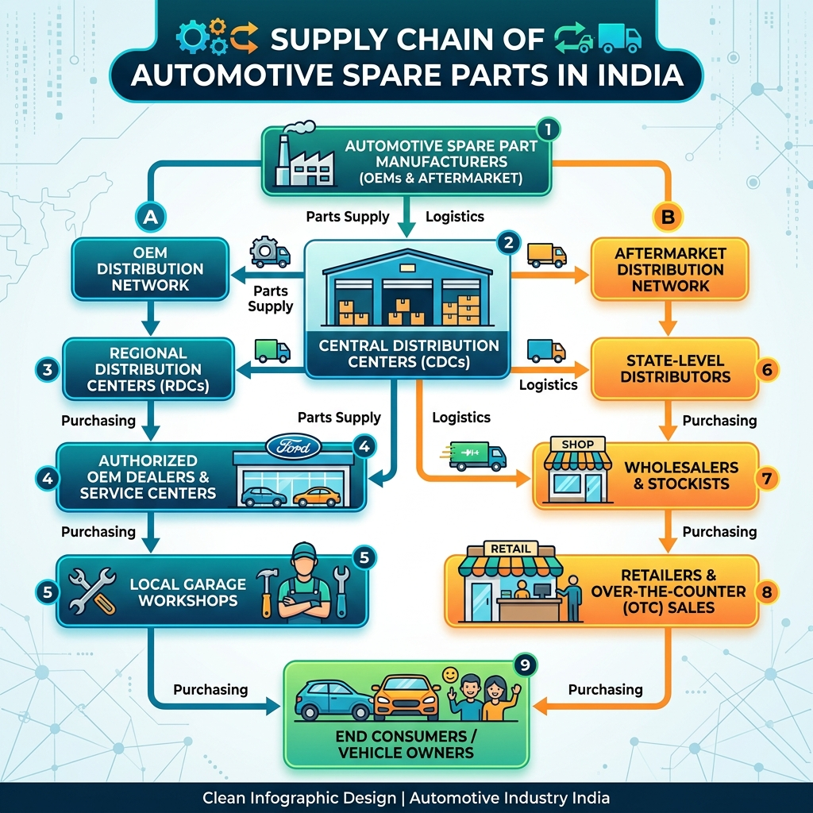

1. The Psychology and Economics of Car Resale Value
Purchasing a car is arguably the second largest financial commitment an Indian household makes, trailing only real estate. Yet, while property generally appreciates over time, a car is a rapidly depreciating physical asset. The financial reality of owning a vehicle is often masked by the thrill of new ownership. The shiny showroom floors, the smell of fresh upholstery, and the celebratory ribbon cutting create a emotional buffer.
However, the true financial performance of a vehicle is revealed only when it is time to sell. This is when many owners face a rude awakening. They discover that their high-tech, feature-loaded vehicle, bought for ₹18 Lakhs five years ago, is now struggling to attract buyers at even ₹7 Lakhs. Meanwhile, a neighbor who purchased a slightly more conservative, less flashier car at the same price point is easily pocketing ₹11 Lakhs.
What drives this massive discrepancy in Car Resale Value? In the pre-owned car market, list prices are not determined by emotional value or the features listed in marketing brochures. Instead, they are governed by strict, market-driven economic principles: utility, trust, maintenance viability, and future risk mitigation. As a mechanical engineer, I analyze used vehicles through a lens of metallurgy, stress fatigue, and mechanical wear. In the used car market, buyers look at the exact same variables, even if they don't use engineering terms. They are assessing: "How long will this machine run without costing me a fortune, and how easily can I keep it on the road?"
Understanding how these market forces operate is crucial. Whether you are looking to purchase a brand-new vehicle and want to protect your future return on investment, or you are hunting in the pre-owned market for a bargain that won't turn into a financial nightmare, analyzing resale factors is essential. In this guide, we will break down the underlying mechanics that govern vehicle depreciation in India.
2. The Hard Numbers: Depreciation Rates Across Segments & Brands
Not all vehicles lose value at the same pace. Depreciation is non-linear and varies wildly depending on the vehicle's body style, fuel type, technological complexity, and brand pedigree. To understand how your vehicle will hold its value, we must examine the historical residual values across different automotive segments in India.
The table below provides a comprehensive comparison of average depreciation rates over 3, 5, and 7-year intervals. These numbers represent typical, well-maintained vehicles in the Indian market, assuming an average annual run of 12,000 kilometers.
| Vehicle Segment | Typical Brands / Models | 3-Year Depreciation (%) | 5-Year Depreciation (%) | 7-Year Depreciation (%) | Primary Resale Driver |
|---|---|---|---|---|---|
| Entry Hatchbacks | Maruti Alto, WagonR, Tata Tiago | 20% – 25% | 35% – 40% | 50% – 55% | Low run costs & ease of repairs |
| Premium Hatchbacks | Maruti Baleno, Hyundai i20, Toyota Glanza | 25% – 30% | 40% – 45% | 55% – 60% | High urban demand for petrols |
| Compact SUVs / Crossovers | Hyundai Creta, Maruti Brezza, Kia Seltos | 18% – 22% | 30% – 35% | 45% – 50% | Strong demand for high ground clearance |
| Body-on-Frame SUVs | Toyota Fortuner, Mahindra Scorpio-N | 10% – 15% | 20% – 25% | 35% – 40% | Robust engineering & high market status |
| Mid-Size Sedans | Honda City, Hyundai Verna, VW Virtus | 30% – 35% | 48% – 52% | 60% – 65% | Declining market segment preference |
| Electric Vehicles (EVs) | Tata Nexon EV, MG ZS EV | 40% – 50% | 65% – 75% | 80% – 85% | Battery degradation & tech obsolescence |
| Luxury Sedans / SUVs | Mercedes C-Class, BMW 3 Series, Audi Q5 | 45% – 50% | 65% – 70% | 78% – 83% | High cost of parts out of warranty |
Let us analyze the engineering and market forces behind these distinct depreciation curves:
Entry and Premium Hatchbacks
Hatchbacks are the workhorses of urban India. Their depreciation is remarkably stable because they cater to first-time buyers, driving schools, and daily commuters who prioritize fuel economy and cheap maintenance over all else. Since these vehicles rely on simple, naturally aspirated engines (like Maruti’s K-Series engines) and basic suspension setups, used buyers have little fear of mechanical failure.
Electric Vehicles (EVs): The Rapid Drop
EVs currently experience the most severe depreciation in the pre-owned market. The reason is two-fold: battery health and technological obsolescence. A modern EV's lithium-ion battery pack represents up to 50% of its total cost. These batteries degrade over time due to thermal cycles (especially in hot Indian climates) and chemical aging. A used buyer looking at a 5-year-old EV knows that the remaining battery life is limited, and a future battery replacement could cost ₹5 to ₹8 Lakhs, exceeding the car's market value. Additionally, rapid advancements in electric motor efficiency and range mean older EVs quickly become outdated.
Luxury Cars: The Out-of-Warranty Penalty
Luxury German cars are marvels of mechanical and electrical engineering. However, as they age, they become liabilities. A complex air-suspension damper on a Mercedes GLE can cost ₹1.5 Lakhs to replace, while a minor ECU glitch on an Audi can disable the entire steering column lock, requiring parts shipped from Europe. Once the standard 3-year or 5-year extended warranty expires, used car buyers avoid these vehicles due to the high risk of expensive repair bills. This drives their resale value down sharply, allowing savvy used buyers to pick up a 7-year-old luxury sedan for the price of a new compact SUV.

Infographic: The Resale Depreciation Curve by Segment
A visual representation tracking the remaining residual value (%) of different vehicle classes over 1, 3, 5, and 7 years in India.
3. Brand Reputation and Service Network Reach: The Resale Bedrock
In India's used car market, brand reputation is more than just marketing; it is a measure of trust. Pre-owned car buyers are risk-averse. They do not have access to the protective safety net of a new car warranty. Consequently, they look for brands with a proven track record of durability. This is why Toyota and Maruti Suzuki dominate used car resale valuations.
The Maruti Suzuki Advantage
Maruti Suzuki has built its reputation on three pillars: affordable parts, fuel efficiency, and a massive service network. With over 4,000 authorized service touchpoints spanning the length and breadth of India, you can get a Maruti serviced in almost any village or mountain pass. Used buyers know that if a Maruti breaks down, any local roadside mechanic can diagnose it, source the required part within hours, and get the car back on the road for a minimal cost. This makes a used Maruti as liquid as gold in the pre-owned market.
The Toyota Reliability Standard
Toyota takes brand equity a step further by focusing on conservative, robust engineering. Unlike European manufacturers that push engines and cooling systems to their absolute limits to extract maximum power, Toyota over-engineers its components. They design engines that operate under low stress, ensuring they can withstand high temperatures, poor fuel quality, and deferred maintenance. The used car market recognizes this; buyers are willing to pay a premium for a used Toyota because they trust that its mechanical core will remain solid for 3,00,000 kilometers and beyond.
A strong brand name does not guarantee that a specific used car has been cared for. Even a Toyota can be ruined by severe oil sludge, structural accident repairs, or flood damage. Before signing any transfer documents, get an independent, pre-purchase vehicle inspection. We use specialized diagnostic tools to check the chassis rails, engine health, and electronic modules, ensuring you buy a vehicle that matches its paperwork.
The European and Discontinued Brand Disadvantage
Contrast this trust with the reputation of European brands like Volkswagen and Skoda, or brands that have exited the Indian market, such as Ford, Chevrolet, and Fiat. While a used Volkswagen Polo or Ford Figo offers superior build quality, steering feel, and ride stability, their resale values are lower. Used buyers are wary of the higher maintenance costs of European cars, and they fear the logistical nightmare of finding replacement components for discontinued brands.
4. The Spares Equation: Keeping Cars Roadworthy
A vehicle is only as useful as its ability to be driven. If a car sits in a mechanic's workshop for weeks waiting for a critical replacement component, it becomes an expensive driveway ornament. Therefore, the availability of spare parts is a primary driver of used car demand.
Let us analyze how parts availability impact the used car ecosystem:
| Manufacturer Class | Parts Distribution Policy | Aftermarket Ecosystem (Third-Party Support) | Average Lead Time for Critical Parts | Resale Value Impact |
|---|---|---|---|---|
| Open-Market Brands (Maruti Suzuki, Toyota) | Open. Parts sold over-the-counter via authorized MGP/TGP outlets directly to consumers. | Extremely High. Multiple third-party brands produce compatible filters, pads, and dampers. | Same day to 2 days | Strong Boost. Low downtime keeps demand high. |
| Semi-Restricted Brands (Hyundai, Kia, Honda) | Semi-Restricted. Routine parts are accessible, but major body parts or wiring looms require dealer installation. | High. Good support from premium aftermarket brands (Bosch, Brembo). | 2 to 5 days | Neutral. Manageable parts sourcing keeps values stable. |
| Restricted Brands (Volkswagen, Skoda) | Restricted. Parts are strictly routed through authorized service centers to protect repair revenue. | Moderate. Sourcing require specialized European parts importers. | 7 to 15 days | Moderate Hit. High parts costs drive down value. |
| Exited Brands (Ford, Chevrolet, Fiat) | No Official Channels. Dependent on remaining dealer stock, salvage yards, or overseas shipping. | Extremely Low. Major components must be salvaged or custom ordered. | 15 to 60 days | Severe Drop. Cars often sold at scrap value. |
When spare parts are restricted to authorized dealer networks, used buyers are forced to pay high dealer markups for repairs. A simple headlight assembly that would cost ₹4,000 for a Maruti Dzire in the open market can cost ₹22,000 for a Skoda Rapid at a dealership. This parts price gap directly accelerates the depreciation of restricted-parts vehicles.

Infographic: The Spare Parts Sourcing Lifecycle
Comparison flowchart tracking how open parts distribution (OTC) keeps older vehicles on the road cost-effectively vs. restricted networks.
5. Color Preferences: The Paint Color Penalty
It may seem superficial, but the color of a car has a direct, measurable impact on its resale value. In the used car market, conservative color choices command a price premium.
The Dominance of White, Grey, and Silver
In India, white, silver, and grey represent over 70% of passenger vehicle sales. This preference carries over to the pre-owned market for several reasons:
- Fleet Appeal: White cars can be easily integrated into corporate fleets, taxi services, and tourist transport networks. This creates a baseline demand that keeps their resale value high.
- Thermal Management: Light colors absorb less solar radiation. In hot climates, light-colored cars keep cabin temperatures lower, which reduces the load on the air conditioning system and improves fuel efficiency.
- Scratch and Swirl Camouflage: Light metallic finishes (like silver and grey) are excellent at hiding fine scratches, road dust, and swirl marks caused by improper cleaning. Dark colors, by contrast, make even minor paint flaws highly visible.
- Cheap Repair Cost: Standard white, silver, and grey paint codes are simple for local workshops to match. Sourcing paint for a quick bumper respray is inexpensive.
The Penalty on Polarizing Colors
Bright, unconventional colors (such as Lime Green, Sunset Orange, Plum Purple, or Bright Yellow) are highly polarizing. While they look striking in marketing campaigns, they struggle in the used market. A buyer looking for a reliable family car will rarely choose a bright orange or yellow vehicle.
This shrinks the pool of potential buyers, forcing sellers to offer steep discounts. Additionally, matching complex, multi-stage metallic or pearl finishes (such as Tata’s Foliage Green or Mahindra’s Forest Green) requires specialized paint booths and high-end paint systems. A local garage repair will often result in a patchy finish, which used car buyers will use to demand further price reductions.
When auditing a used car, we always check the paint thickness with a digital micron gauge. If the roof or hood measures 280 microns while the rest of the car is 95 microns, it indicates aftermarket painting, likely due to stone chips, rust repair, or roll-over damage. A repainted panel is a useful negotiating point to reduce the purchase price.
6. Transmission Shifts: Manual vs. Automatic Demand
Over the last decade, there has been a major shift in transmission preferences in urban India. Severe traffic congestion in cities like Bangalore, Mumbai, Pune, Delhi NCR, and Ahmedabad has made manual clutch operation in bumper-to-bumper traffic a chore. As a result, demand for automatic transmissions has surged, directly affecting used car resale values.
However, not all automatic transmissions are created equal. The type of automatic transmission in a car determines its reliability, maintenance cost, and resale value.
| Transmission Type | Urban Comfort | Mechanical Longevity | Average Repair Cost (INR) | Used Market Resale Retention |
|---|---|---|---|---|
| Torque Converter (TC) | Good, very smooth takeoff | Excellent. Simple mechanical design easily lasts 1.5 Lakh+ km with fluid changes. | ₹40,000 – ₹70,000 (Clutch plates replacement) | Very High. Used buyers value their bulletproof reliability. |
| Continuously Variable (CVT) | Excellent, zero shift shocks | High. Durable, though push-belt systems can wear out under aggressive driving. | ₹80,000 – ₹1,20,000 (Belt/pulley replacement) | High. Strongly preferred by city commuters. |
| Dual-Clutch / DSG (DCT) | Excellent, rapid shifts | Low to Medium. Dry-clutch systems (like VW’s DQ200) are prone to overheating in heavy traffic. | ₹1,20,000 – ₹2,00,000 (Mechatronic / clutch pack failure) | Low. Used buyers avoid them to bypass high repair bills. |
| Automated Manual (AMT) | Moderate, noticeable shift pause | Medium. Wear items are cheap, but hydraulic actuator units fail around 70,000 km. | ₹35,000 – ₹55,000 (Hydraulic actuator assembly) | Moderate. Appreciated for fuel economy, but actuator failure risk hurts resale. |
| Manual Transmission (MT) | Poor, heavy clutch strain | Extremely High. Simple design. Only the clutch plate requires routine replacement. | ₹8,000 – ₹15,000 (Full clutch replacement kit) | Declining. Hard to sell in Tier-1 cities; still popular in rural areas. |
A used car buyer looking for an automatic will pay a premium for a Torque Converter or CVT because they are reliable. By contrast, a used car with a dry-clutch DSG gearbox is often a hard sell. Savvy pre-owned buyers will deduct the cost of a potential mechatronic failure from their offer, driving down the vehicle's resale value.
Infographic: Transmission Types and Resale Market Performance
A detailed matrix comparing transmission systems on mechanical repair liability vs. used buyer demand.
7. Case Study: The Resale Resilience of the Toyota Fortuner
To understand how brand reputation, build quality, and market supply align to preserve resale value, let us look at the Indian used car market's most resilient vehicle: the Toyota Fortuner.
It is common to see a 5-year-old Toyota Fortuner with over 1,00,000 kilometers on the odometer listed for 75% to 80% of its original purchase price. Under normal depreciation models, a vehicle with those parameters should have lost at least 50% of its value. What explains the Fortuner's unique resale strength?
Case Study: Why the Toyota Fortuner Retains Value
Resale LegendBuilt on Toyota’s IMV platform (shared with Hilux). Uses a heavy-duty steel ladder frame and a robust, low-stress 2.8L 1GD-FTV diesel engine designed to run for 5,00,000+ km without an overhaul.
Following the exit of the Ford Endeavour, the Fortuner has faced no direct competitors in the full-size, diesel SUV segment, channeling all buyer demand to a single model.
Toyota has steadily increased new Fortuner prices over the years. A buyer who cannot afford a new Fortuner at ₹55 Lakhs on-road will willingly pay ₹32 Lakhs for a well-maintained 5-year-old unit, keeping used prices high.
Even with high mileage, used Fortuners rarely show signs of chassis cracks, oil blow-by, or wiring harness degradation. The high quality of factory materials preserves cabin surfaces and mechanical components.
The case of the Toyota Fortuner shows that high resale value is not an accident. It is the result of over-engineered mechanicals, brand trust, and market supply and demand.
8. The Silent Killer: How Poor Maintenance Cascades into Low Resale
Even if you own a reliable, highly sought-after white SUV, poor maintenance will ruin its resale value. When evaluating a used car, experienced inspectors look past the polished exterior to check for signs of neglect.
Below is an engineering breakdown of how common maintenance shortcuts degrade a car's mechanical health and drive down its resale value:
1. Engine Oil Oxidation and Sludge Build-up
Skipping scheduled oil changes or using low-grade mineral oil causes the lubricant to break down under high operating temperatures. The oil oxidizes, turning into a thick, carbon-rich sludge that blocks oil galleries and restricts flow to the camshaft and crankshaft bearings. This causes friction, metal wear, and engine noise. An inspector will check the oil filler cap for sludge; if present, it indicates poor maintenance, which will drastically lower the car's valuation.
2. Torn Suspension Dust Boots
The rubber boots protecting ball joints, tie-rod ends, and drive shafts are designed to keep grease in and grit out. Driving with a torn boot allows road grime and water to enter the joint. The abrasive grit destroys the internal bearings, leading to suspension knock, steering play, and CV joint failure. A simple ₹500 rubber boot replacement, if ignored, can turn into a ₹25,000 repair bill for the suspension assembly.
3. Neglected Automatic Transmission Fluid (ATF)
Many manufacturers claim their automatic gearboxes use "lifetime transmission fluid." From an engineering perspective, this is a myth. Transmission fluid shears and loses its viscosity over time due to heat cycles. This leads to internal friction, clutch slip, and rough shifts. Changing transmission fluid every 60,000 kilometers is essential to prevent gearbox failures that can cost over ₹1 Lakh to repair.
4. Structural Rust
Ignoring deep scratches that expose raw metal allows moisture and oxygen to react with the steel panel, causing iron oxide (rust). In coastal cities like Khambhat and Ahmedabad, rust can spread quickly. Once rust eats into structural components like the rocker panels, wheel arches, or suspension mountings, it compromises the vehicle's structural integrity, reducing its resale value to scrap metal pricing.
9. Actionable Checklist: 5 Tips to Preserve Resale Value
If you own a vehicle and want to protect its resale value, here are 5 proactive maintenance habits you should implement.
Resale Preservation Checklist
Interactive Checklist: Track your maintenance habits to preserve your vehicle's resale value. Click each item to check it off.
- Maintain a Complete, Digital Service Log: Keep all dealer service bills, diagnostic reports, and parts replacement receipts in a single folder. A complete dealership service record increases a car's resale value by 10% to 15% because it verifies that the mileage is genuine and maintenance was timely.
- Fix Dents and Scratches Promptly: Do not leave raw metal panels exposed to air and moisture, which leads to rust. Use Paintless Dent Repair (PDR) to fix minor supermarket dings without repainting the entire panel, preserving the factory paint finish.
- Keep the Car Stock: Avoid aftermarket modifications like loud exhausts, spliced wiring for aftermarket sound systems, or oversized alloy wheels. These modifications void warranties, ruin ride quality, and make used car buyers suspicious of vehicle abuse.
- Apply Underbody Rust Protection: Apply an anti-rust coating to the chassis rails, undercarriage panels, and wheel arches, especially if you live in coastal areas. This protects structural steel from salt and humidity.
- Protect Interior Cabin Touchpoints: Use high-quality 7D floor mats to protect the carpets from dampness and dirt. Clean the leather steering wheel, dashboard plastics, and seat covers regularly to prevent cracking, fading, and wear.
10. How CARROBAAR_Drive Protects Your Investment
Navigating the pre-owned car market is challenging. Whether you are buying a used vehicle and want to verify its true value, or you are selling a car and want to justify a premium price, you need objective data.
At CARROBAAR_Drive, we provide independent, professional vehicle inspections to help you make informed decisions:
- Pre-Purchase Inspections: We conduct a comprehensive audit of used vehicles, checking the chassis for accident repairs, scanning the ECUs for fault codes, measuring paint thickness, and road-testing the engine and gearbox. This helps you avoid buying a hidden lemon and gives you the data you need to negotiate a fair price.
- New Car PDI: We inspect your new car at the dealer stockyard before RTO registration, catching transit damage, repainted panels, and factory errors while you still have the leverage to reject the vehicle.
- Automotive Consultation: We help you choose the right brand, model, and trim based on your usage, steering you away from high-depreciation vehicles and toward models that hold their value over time.
We operate with zero commission and no conflicts of interest. Our goal is to provide you with the honest, technical information you need to protect your investment.
Protect Your Automotive Investment
Don't guess when it comes to vehicle value. Book an independent, professional vehicle inspection from CARROBAAR_Drive in Gujarat. Get the technical facts before you buy or sell.
11. Car Resale Value: Frequently Asked Questions (FAQs)
A brand-new car loses roughly 10% to 15% of its on-road value the moment it is registered and driven off the dealership lot. This is because the vehicle's legal status transitions from "new" to "used," and it now has a registered owner in the government's VAHAN database.
Currently, strong hybrids and petrol engines hold the most stable resale value. Diesel passenger vehicles face steep depreciation in areas like Delhi-NCR due to the 10-year age limit, though large diesel SUVs (like the Toyota Fortuner and Mahindra Scorpio-N) still command a premium in other states. Electric Vehicles (EVs) experience the fastest depreciation due to concerns over battery aging and rapid technological updates.
Yes, a repainted panel can reduce a vehicle's resale value by 5% to 10% per panel. Used car buyers are wary of repainted panels because they suggest the car was in an accident. During our inspections, we use a digital coating thickness gauge to measure the paint in microns. This allows us to determine if a panel was simply resprayed to fix a scratch or if body filler was used to repair structural damage.
Generally, yes. Dark colors like black, deep blue, and dark red have a smaller pool of buyers in India compared to white, grey, and silver. Dark paints absorb more heat, making the cabin hotter in summer, and they easily show dust, scratches, and swirl marks. This lower demand translates to a 3% to 5% resale discount compared to identical cars in lighter colors.
It has a significant negative impact, especially if the vehicle uses a dry-clutch Dual-Clutch Transmission (DCT/DSG). Since replacing a faulty DSG clutch pack or mechatronic module can cost between ₹1.2 Lakh and ₹2 Lakhs, used car buyers will often deduct this potential cost from their offers. Torque converter and CVT automatic gearboxes hold their value much better due to their reliability.
Yes. Extensive modifications, such as aftermarket performance exhausts, lowered suspensions, custom ECU tunes, or spliced wiring for audio upgrades, almost always lower a car's resale value. Most pre-owned buyers prefer vehicles in factory-stock condition, as modifications can void warranties, affect reliability, and suggest the car was driven aggressively.
A complete, verifiable service history at authorized dealerships can add 10% to 15% to a car's resale value compared to an identical vehicle with missing records. The service history proves that the odometer reading is genuine and that all scheduled maintenance was performed on time.
When a brand exits the market (like Ford, Chevrolet, or Fiat), used car buyers fear a lack of replacement parts, long service lead times, and a lack of support from local workshops. This concern drops buyer demand, causing the resale value of these vehicles to fall sharply.
You should check the front apron spot welds, inspect the radiator support frame for ripples, check if the structural seam sealants are uniform, and look for paint thickness readings over 250 microns on the A, B, and C pillars. Also, inspect the chassis rails underneath the car for signs of pulling or heating, which indicate that the frame was straightened after a collision.
Our certified inspectors conduct a comprehensive audit of the vehicle, using paint gauges, diagnostic scanners, and mechanical testing to identify hidden defects, wear items, and past repairs. We provide a detailed technical report that highlights the vehicle's true condition. You can use this report to negotiate a lower price with the seller or walk away from a problematic car.